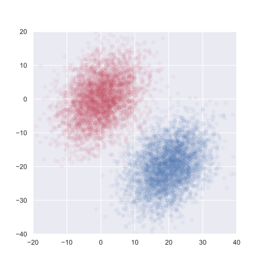

The univariate normal pdf is: \[f_Y(y)=\frac{1}{\sqrt{2\pi}\sigma}e^{-\frac{1}{2}(\frac{y-\mu}{\sigma})^2}, \quad -\infty<y<+\infty\]
The bivariate normal pdf is, \[f_{X,Y}(x, y)=Ke^{-\frac{1}{2}c(x^2-2\nu xy+y^2)}, \quad -\infty<x, y<+\infty\] where \(c\) and \(\nu\) are constants.
\[\begin{align}
f_{X,Y}(x, y)&=Ke^{-\frac{1}{2}c(x^2-2\nu xy+y^2)}\\
&=Ke^{-\frac{1}{2}c(x^2-\nu^2x^2+\nu^2x^2-2\nu xy+y^2)}\\
&=Ke^{-\frac{1}{2}c(x^2-\nu^2x^2)+(\nu x-y)^2}\\
&=Ke^{-\frac{1}{2}cx^2(1-\nu^2)}e^{-\frac{1}{2}c(\nu x-y)^2}\\
\end{align}\] The exponents must be negative, so \(1-\nu^2>0\).
\[\begin{align}
\int_{-\infty}^{+\infty}\int_{-\infty}^{+\infty}f_{X,Y}(x, y)dxdy&=\int_{-\infty}^{+\infty}\int_{-\infty}^{+\infty}Ke^{-\frac{1}{2}cx^2(1-\nu^2)}e^{-\frac{1}{2}c(\nu x-y)^2}dxdy\\
&=K\int_{-\infty}^{+\infty}e^{-\frac{1}{2}cx^2(1-\nu^2)} \Biggl[\int_{-\infty}^{+\infty}e^{-\frac{1}{2}c(y-\nu x)^2}dy\Biggr]dx\\
&=K\int_{-\infty}^{+\infty}e^{-\frac{1}{2}cx^2(1-\nu^2)}\frac{\sqrt{2\pi}}{\sqrt{c}}dx\\
&=K\frac{\sqrt{2\pi}}{\sqrt{c}}\frac{\sqrt{2\pi}}{\sqrt{c(1-\nu^2)}}\\
&=K\frac{2\pi}{c\sqrt{1-\nu^2}}\\
&=1
\end{align}\] Then \(K=\frac{c\sqrt{1-\nu^2}}{2\pi}\), if we choose \(c=\frac{1}{1-\nu^2}\), then \(K=\frac{1}{2\pi\sqrt{1-\nu^2}}\) and
\[\begin{align}
f_{X,Y}(x, y)&=\frac{1}{2\pi\sqrt{1-\nu^2}}e^{-\frac{1}{2}\frac{1}{1-\nu^2}(x^2-2\nu xy+y^2)}\\
&=\frac{1}{2\pi\sqrt{1-\nu^2}}e^{-\frac{1}{2}\frac{1}{1-\nu^2}(x^2-\nu^2x^2+\nu^2x^2-2\nu xy+y^2)}\\
&=\frac{1}{2\pi\sqrt{1-\nu^2}}e^{-\frac{1}{2}x^2}e^{-\frac{1}{2}\frac{1}{1-\nu^2}(\nu x-y)^2}
\end{align}\] The marginal pdfs are sure the standard normal:
\[\begin{align}
f_{X}(x)&=\int_{-\infty}^{+\infty}f_{X,Y}(x, y)dy\\
&=\int_{-\infty}^{+\infty}\frac{1}{2\pi\sqrt{1-\nu^2}}e^{-\frac{1}{2}x^2}e^{-\frac{1}{2}\frac{1}{1-\nu^2}(\nu x-y)^2}dy\\
&=\frac{1}{2\pi\sqrt{1-\nu^2}}e^{-\frac{1}{2}x^2}\int_{-\infty}^{+\infty}e^{-\frac{1}{2}\frac{1}{1-\nu^2}(\nu x-y)^2}dy\\
&=\frac{1}{2\pi\sqrt{1-\nu^2}}e^{-\frac{1}{2}x^2}\sqrt{2\pi}\sqrt{1-\nu^2}\\
&=\frac{1}{\sqrt{2\pi}}e^{-\frac{1}{2}x^2}
\end{align}\] and \(E(X)=E(Y)=0\) and \(\sigma_X=\sigma_Y=1\), then the correlation coefficient between X and Y is:
\[\begin{align}
\rho(X,Y)&=\frac{Cov(X,Y)}{\sigma_X\sigma_Y}\\
&=\frac{E(XY) − E(X)E(Y)}{\sigma_X\sigma_Y}\\
&=E(XY)\\
&=\int_{-\infty}^{+\infty}\int_{-\infty}^{+\infty}xyf_{X,Y}(x, y)dxdy\\
&=\int_{-\infty}^{+\infty}\int_{-\infty}^{+\infty}xy\frac{1}{2\pi\sqrt{1-\nu^2}}e^{-\frac{1}{2}x^2}e^{-\frac{1}{2}\frac{1}{1-\nu^2}(\nu x-y)^2}dxdy\\
&=\int_{-\infty}^{+\infty}\frac{1}{\sqrt{2\pi}}xe^{-\frac{1}{2}x^2} \Biggl[\int_{-\infty}^{+\infty}\frac{1}{\sqrt{2\pi(1-\nu^2)}}ye^{-\frac{1}{2}\frac{1}{1-\nu^2}(\nu x-y)^2}dy\Biggr]dx\\
&=\int_{-\infty}^{+\infty}\frac{1}{\sqrt{2\pi}}xe^{-\frac{1}{2}x^2}\nu x dx\\
&=\nu\int_{-\infty}^{+\infty}\frac{1}{\sqrt{2\pi}}x^2e^{-\frac{1}{2}x^2}dx\\
&=\nu Var(X)\\
&=\nu \sigma_X\\
&=\nu
\end{align}\] So \(\nu\) is the correlation coefficient between X and Y.
Then we can replace \(x\) with \((x − \mu_X )/\sigma_X\) and \(y\) with \((y − \mu_Y )/\sigma_Y\) in the \(f_{X,Y}(x, y)\). iF \(X\) and \(Y\) ARE random variables with joint pdf \[\begin{align} f_{X,Y}(x, y)&=\frac{1}{2\pi\sigma_X\sigma_Y\sqrt{1-\rho^2}}exp\Biggl[-\frac{1}{2}\frac{1}{1-\rho^2}\Bigl[(\frac{x − \mu_X}{\sigma_X})^2-2\rho(\frac{x − \mu_X}{\sigma_X})(\frac{y − \mu_Y}{\sigma_Y}) +(\frac{y − \mu_Y}{\sigma_Y})^2\Bigr]\Biggr]\\ \end{align}\] for all \(x\) and \(y\), then \(X\) and \(Y\) are said to have bivariate normal distribution and \(\rho\) is the correlation coefficient between \(X\) and \(Y\).
When \(E(X)=\mu_X=E(Y)=\mu_Y=0\) and \(\sigma_X=\sigma_Y=1\), the conditional expectation is \(E(Y|x)\), because \[\begin{align} f_{Y|x}(y)&=\frac{f_{X,Y}(x, y)}{f_{X}(x)}\\ &=\frac{\frac{1}{2\pi\sqrt{1-\rho^2}}e^{-\frac{1}{2}x^2}e^{-\frac{1}{2}\frac{1}{1-\rho^2}(\rho x-y)^2}}{\frac{1}{\sqrt{2\pi}}e^{-\frac{1}{2}x^2}}\\ &=\frac{1}{\sqrt{2\pi}\sqrt{1-\rho^2}}e^{-\frac{1}{2}\frac{1}{1-\rho^2}(y-\rho x)^2} \end{align}\] is a normal random variable with mean \(\rho x\) and variance \(1−\rho^2\), then \(E(Y|x)=\rho x\) and \(Var(Y|x)=(1−\rho^2)\), replacing \(x\) and \(y\) with \(\frac{x − \mu_X}{\sigma_X}\) and \(\frac{y − \mu_Y}{\sigma_Y}\) we can get : \[E(Y|x)=E(\frac{y − \mu_Y}{\sigma_Y}|\frac{x − \mu_X}{\sigma_X})=\mu_Y+\sigma_Y(E(y|\frac{x − \mu_X}{\sigma_X}))=\mu_Y+\sigma_Y\rho \frac{x − \mu_X}{\sigma_X}\] and \(Var(Y|x)=\sigma_Y^2(1-\rho^2)\).
We can generate groups of bivariate Gaussian variables with different means with following steps using python :
1. Generate 10 means \(m_k\) and covariances \(\mathbf{I}\) from a bivariate Gaussian for 2 classes
\[
\begin{equation}
m_k \sim \begin{cases}
N((1,0)^T, \mathbf{I}) & \text{ for BLUE}, \\
N((0,1)^T, \mathbf{I}) & \text{ for ORANGE}
\end{cases}
\end{equation}
\]
2. For each class, we generate 100 observations as follows:
1. Pick an \(m_k\) at random with probability \(1/10\)
2. Generate \(x_i \sim N(m_k, \mathbf{I}/5)\)
import random
import numpy as np
import matplotlib.pyplot as plt
def generate_data(sample_size:int)->tuple:
# Parameters for mean distributions
mean_blue = [1, 0]
mean_orange = [0, 1]
mean_cov = np.eye(2)
mean_size = 10
# Additional parameters for blue and orange distributions
sample_cov = np.eye(2)/5
# Generate mean components for blue and orange (10 means for each)
sample_blue_mean = np.random.multivariate_normal(mean_blue, mean_cov, mean_size)
sample_orange_mean = np.random.multivariate_normal(mean_orange, mean_cov, mean_size)
# Generate blue points
sample_blue = np.array([
np.random.multivariate_normal(sample_blue_mean[random.randint(0, 9)],
sample_cov)
for _ in range(sample_size)
])
y_blue = [0 for _ in range(sample_size)]
# Generate orange points
sample_orange = np.array([
np.random.multivariate_normal(sample_orange_mean[random.randint(0, 9)],
sample_cov)
for _ in range(sample_size)
])
y_orange = [1 for _ in range(sample_size)]
data_x = np.concatenate((sample_blue, sample_orange), axis=0)
data_y = np.concatenate((y_blue, y_orange))
return data_x, data_ysample_size = 100
data_x, data_y = generate_data(sample_size)
sample_blue = data_x[data_y == 0, :]
sample_orange = data_x[data_y == 1, :]
# Plot
fig = plt.figure(figsize=(10, 10))
ax1 = fig.add_subplot(1, 1, 1)
ax1.plot(sample_blue[:, 0], sample_blue[:, 1], 'o')
ax1.plot(sample_orange[:, 0], sample_orange[:, 1], 'o', color='orange')
ax1.set_title('0/1 Response')
plot_x_min, plot_x_max = ax1.get_xlim()
plot_y_min, plot_y_max = ax1.get_ylim()
plt.show()